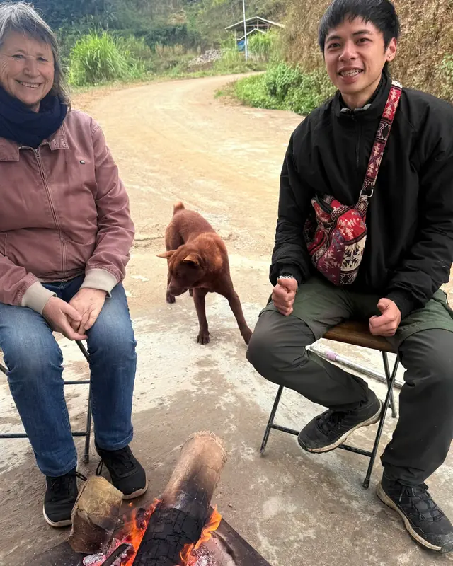

Chợ phiên, không phải bản đồ
Bên ngoại tôi là người Tày. Bà tôi lấy hàng từ bên kia biên giới Trung Quốc, mang về bán cho bà con trong các bản — nên tuổi thơ tôi trôi qua ở chợ phiên, giữa những thứ tiếng không phải tiếng mình, trong những ngôi nhà không phải nhà mình. Đồng Văn hồi đó còn nhỏ lắm. Chưa ai lên đây chạy một vòng cung xe máy cả.
Tôi học Hà Giang theo cách đó. Không phải qua bản đồ, cũng không phải qua khoá đào tạo hướng dẫn viên nào.
Mười tám tuổi, vác đồ cho người khác
Tôi bắt đầu năm mười tám tuổi, vác đồ cho một người đầu bếp dẫn khách vào rừng. Tôi là người phụ, không phải hướng dẫn viên. Thứ tôi nhớ là năng lượng mà khách nước ngoài mang theo — họ hỏi những câu về chính tỉnh của tôi mà tôi chưa từng nghĩ tới.
Rồi tôi thử một cuộc đời khác. Đi học ở Hà Nội, rồi ngồi bàn giấy, làm website và viết nội dung cho doanh nghiệp. Nó không giữ được tôi. Công việc dẫn tour đầu tiên đến từ một tin nhắn trên Facebook, và có người đã tin tôi trước cả khi tôi xứng đáng được tin. Tôi làm nghề này từ đó. Bốn năm rồi.
Cái đêm tôi lạc trên chính ngọn núi của mình
Viết ra thì ngượng. Tôi lạc ở Mã Pì Lèng — nơi tôi thuộc hơn con đường trước cửa nhà.
Chỉ có tôi và mấy người bạn, đi chơi riêng, tìm một góc nhìn chưa ai chụp. Chúng tôi xuất phát từ sông Nho Quế lúc đã xế tà, và đó là cái sai đầu tiên. Dải núi giữa Bản Mồ và Thiên Hương chạy như sống lưng một con vật — leo hết đốt này lại còn đốt khác, rồi đốt khác nữa. Càng lên cao càng lạnh, rồi mưa.
Chúng tôi cởi hết quần áo ướt và nhét lá khô quanh người trong một khe đá. Vải ướt rút hết nhiệt ra khỏi cơ thể. Đó không phải thứ tôi học trong khoá đào tạo nào — người ở đây ai cũng biết.
Lên tới đỉnh thì trời tối, và không có đường xuống.
Thứ cứu chúng tôi là ngô. Người Mông trồng ngô trên những sườn ấy, và ở đâu có ngô thì ở đó có lối — một lối mòn nhỏ họ tự phát để đi khai hoang. Chúng tôi tìm được và men theo nó xuyên rừng, trong mưa, trên đất đỏ, gần như suốt đêm.
Tôi kể chuyện này cho khách vì một lý do. Khi tôi nói quay lại, hoặc chờ thêm một ngày, hoặc không đi con đường đó — tôi không phải đang giữ gìn kỳ nghỉ của bạn. Tôi cẩn thận vì tôi biết chính xác nơi này ngừng đẹp nhanh đến mức nào.
Du lịch tử tế ở đây, theo tôi
Chủ yếu là hai điều.
Thứ nhất là bầu trời. Bạn không cãi được với thời tiết ở Hà Giang. Mưa đến cùng mùa hè và kéo sang đầu thu, và sạt lở không phải chuyện đồn thổi. Tôi xem dự báo trước khi xem lịch trình, và nếu ngày của bạn không hợp thì tôi nói trước khi bạn trả tiền, không phải sau.
Thứ hai là cách người ta lái xe. Điều thật sự khiến tôi bực về du lịch ở đây là kiểu chạy của một số người — phóng nhanh, vượt ở khúc cua khuất, đua để giữ đúng lịch trình. Đã có rất nhiều tai nạn. Không phải suýt nữa. Tai nạn thật. Tôi chạy chậm tới mức người phía sau sốt ruột, và tôi đã quen với điều đó.
Bây giờ tôi ở đâu
Vẫn ở Hà Giang. Chưa có gia đình riêng. Nói tiếng Anh và tiếng Việt, cộng thêm chút tiếng Tày và tiếng Mông từ hồi lớn lên cạnh hàng xóm — đủ để trong bản đi xa hơn một cuốn sổ tay phiên dịch.
Tôi tự dẫn mọi chuyến, nhóm không quá năm người. Đó không phải quyết định tiếp thị — đó là số người nhiều nhất mà tôi thật sự chăm sóc được trên những cung đường này.